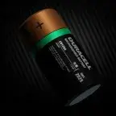

BatterySystem
- Downloads
- 1,770
- Favourites
- 0
Huge thank you to Jiro for making this mod!
This mod is not mine, I have only refactored the code & fixed some of the largest issues!
Features
- All Headsets, Tactical devices, Sights & Thermal/NVGs now require batteries and have a slot reserved for them. Batteries are drained over time when the item is equipped and in use.
- Without batteries Sights lose their reticle (you can still see through them!) and NVDs & tactical devices won’t work.
- Bots have batteries in their gear & backpacks. Lower level enemies generally have more drained batteries.
- Several crafts in the hideout make it possible to recharge & make batteries.
- Device description lets you know which battery type is required, but generally headphones always take AAs, Sights take either AAs or CR2032s, Holographic sights (like EOTECHs) and flashlights take CR123s.
Replaces Existing items:
D Size Batteries => CR2032 Batteries
Rechargable Batteries => CR123 Batteries
Installation
- Install like normal: Drop the extracted user/ and BepInEx/ folders into your SPT installation folder.
- Refresh Item Icons: After starting the Server, in Launcher click Settings > Clean Temp files.
Compability
BatterySystem conflicts with any mod that modifies D Size Battery or Rechargable Battery.
Any mod that alters hearing (such as a deafening effect) won’t probably work well with unpowered headsets. I recommend disabling BatterySystem for headsets in the F12-menu.
Adding compatibility for custom electronics such as collimators:
- Open up order.json in your SPT-AKI/user/mods/order.json
- Add the folder names of your mods that add electronics. Add Jiro-BatterySystem after them:
JSON: order.json
{ “order”: [ “CustomSightModFolderName”, “AnotherCustomSightFolderName”, “Jiro-BatterySystem” ] } Custom electronics default to using CR2032 batteries.
Written permission from Jiro to publish this updated version:
Version
1.6.0
Tested with SPT 3.9.4
- Updated to work with SPT 3.9.4
- Fixed bug where game would soft lock when you entered a Mounted Firearms
- Reworked battery spawning to be compatible with Realism Mod (Bots will now have batteries)
- Headphones that attaches to helmets now use batteries
- Tactical devices attached to helmets now use batteries
- Flashlights & Lasers are now always turned off (not only visually) when out of battery, which should fix desync & bots seeing lights that dont have batteries
- Some work on WIP feature “folding” backup sights (not working yet)
- Refractored almost all code (should be a lot easier to add new features now)
^ Work since Jiro’s last update